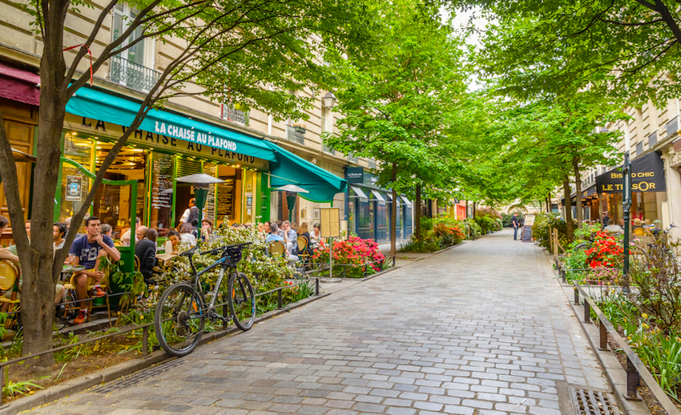

Discover Secret Places in Paris
Paris not only offers the famous sites but also lesser-known hidden gems waiting to be explored.
Canal Saint-Martin
This charming canal offers beautiful scenery and local restaurants. Read more about Canal Saint-Martin
Musée Rodin
The Rodin Museum, set in an 18th-century mansion, showcases the famous works of Auguste Rodin, including "The Thinker". Read more about Musée Rodin
Le Marais
The beautiful Marais neighborhood offers art galleries, boutique shops, and local cafes. Read more about Le Marais
